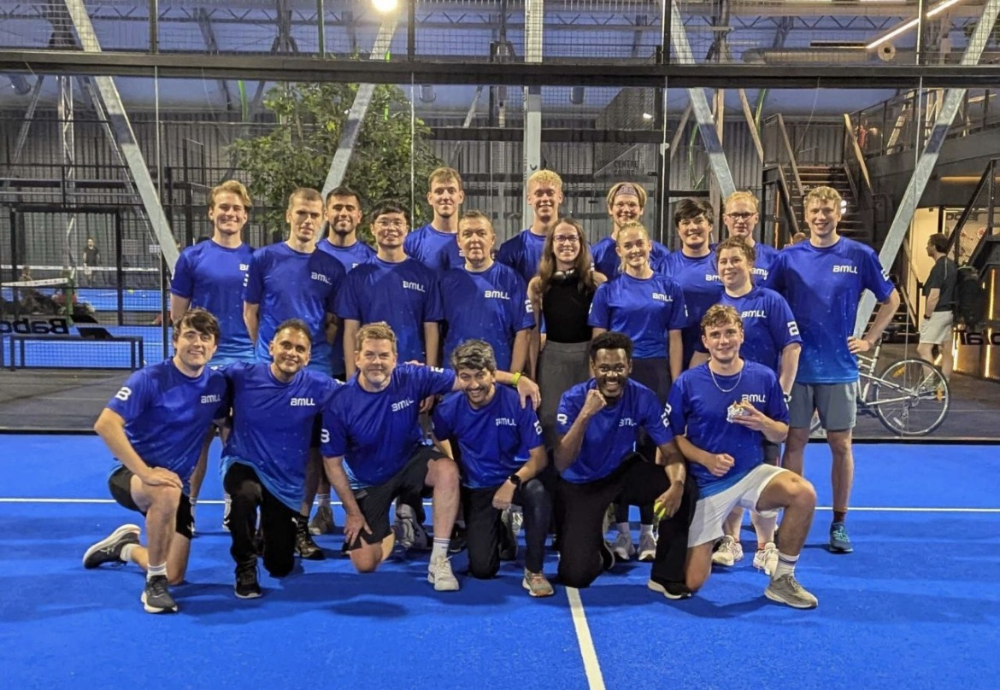
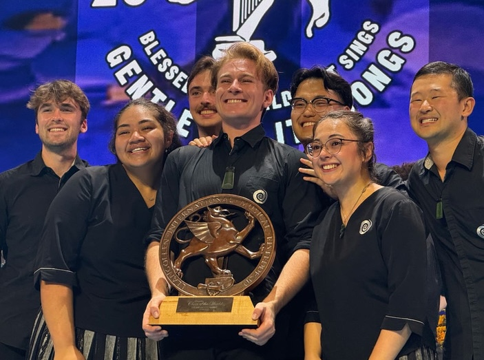
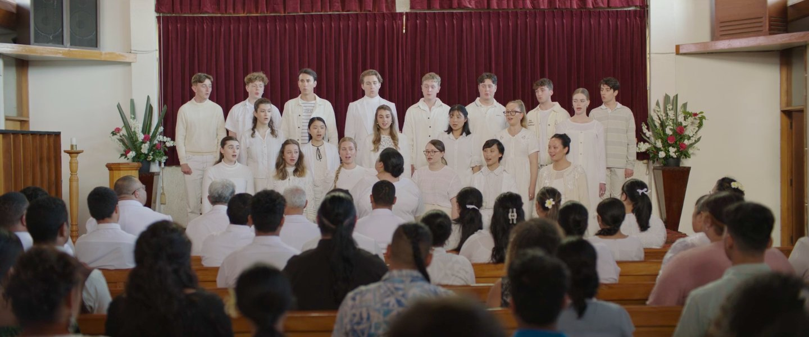
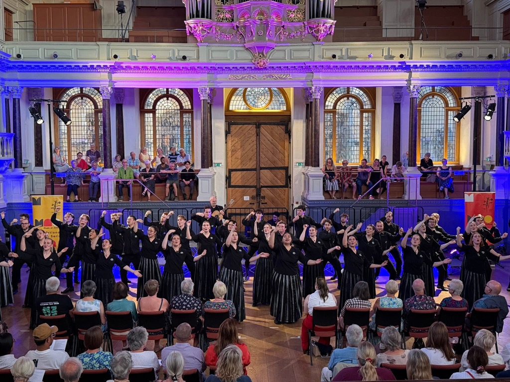
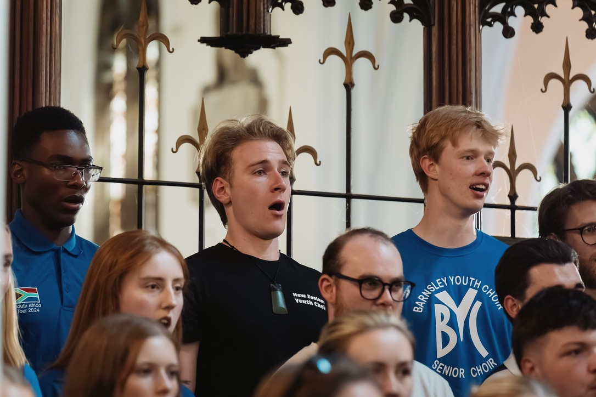
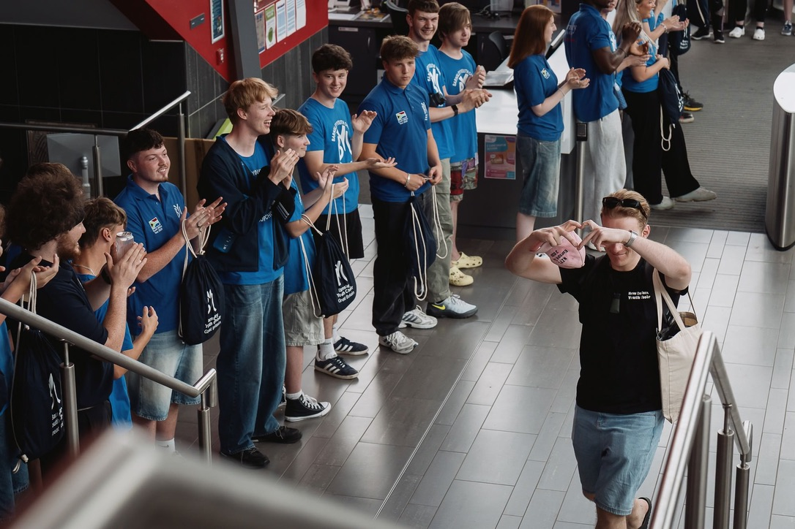
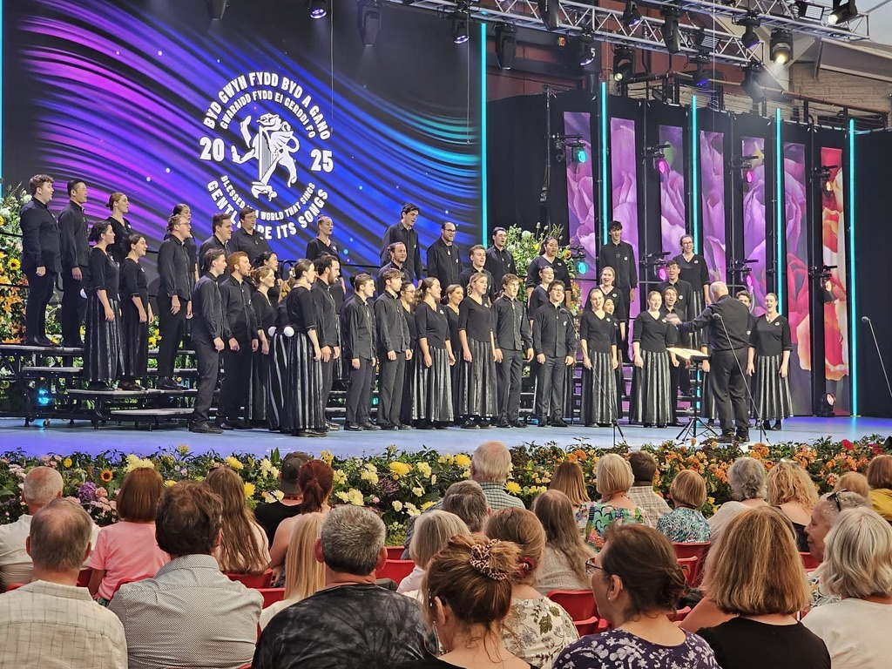
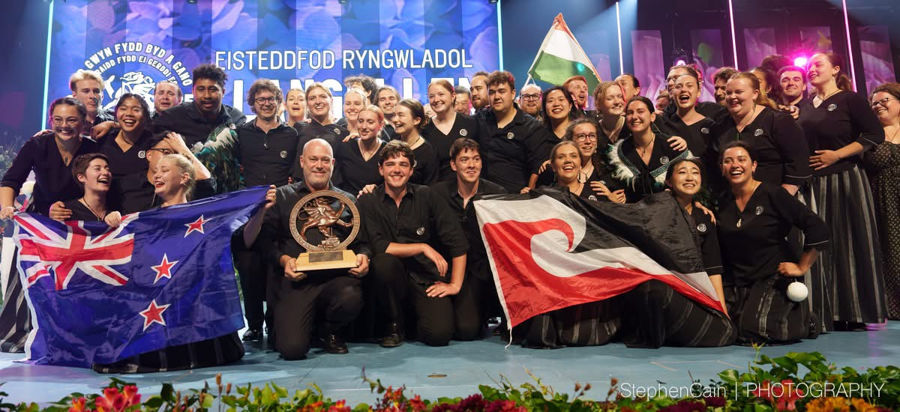

Quillan Denton
Junior Quantitative Analyst | Computer Science Graduate
Auckland, NZ | London, UK
About Me
I'm a Computer Science graduate from The University of Auckland, currently working as a Junior Quantitative Analyst at BMLL in London. I specialise in data analysis, software development, and building scalable applications with modern technologies.
With a strong foundation in programming languages including Python, Java, C++, and JavaScript, I've developed expertise in machine learning frameworks, web development, and cloud technologies. I'm passionate about leveraging technology to solve complex problems in financial data and analytics.
Beyond my technical work, I'm an accomplished musician and proud former member of the New Zealand Youth Choir. During my time with the choir, we were named "Choir of the World" at the 2025 Llangollen International Musical Eisteddfod and won the "Grand Prix of Nations" at the European Choir Games.
Work Experience
Junior Quantitative Analyst
BMLL | London, UK
August 2025 – Present

- Support the onboarding of data from new exchanges, ensuring smooth integration, accuracy, and alignment with internal data standards and workflows.
- Collaborate on internal client usage assessments and analytical reviews to identify trends, optimise data utilisation, and support informed decision-making across teams.
- Maintain and monitor data quality across all exchanges, indices, and securities to ensure consistency, reliability, and compliance with established quality benchmarks.
Education
Bachelor of Science in Computer Science
The University of Auckland
March 2020 – September 2024
A degree focused on software development, data analysis, and large-scale systems design, with practical experience across multiple programming languages including Java, Python, C++, and JavaScript.
Academic Potential Scholarship: awarded for academic achievement, demonstrated leadership potential, and extracurricular accomplishments.
Technical Skills
Programming Languages
Frameworks & Libraries
Tools & Technologies
Projects
Internal Data Coverage Tool
S3, Real-time APIs, Python, RapidFuzz
A tool that consolidates data from multiple sources, enabling users to quickly search the securities, listings, indices, and exchanges covered by BMLL.
Event Management Platform
React, Node.js, DynamoDB, Real-time APIs, JavaScript
A free event management application that lets users create and join a variety of events. Led development of a scalable application with real-time data synchronisation, efficient API design, and database optimisation for multiple concurrent users.
View on GitHubImage Analysis Software
Python, TensorFlow, Matplotlib
A computer vision application for automated image processing and classification. Implemented algorithms for Gaussian smoothing, thresholding, morphological operations, and object detection using TensorFlow and Matplotlib.
Data Trend Analysis Tool
Python, NumPy, Pandas, Matplotlib
A Python application for analysing numerical datasets, with statistical pattern detection and data visualisation.
Music Library Web Application
Python, Flask, Jinja, SQL/SQLite, HTML/CSS
A music library web application for browsing albums, artists, and tracks. Implemented the MVC and Repository design patterns for a scalable architecture, with comprehensive testing and SQL-based persistent storage.
View on GitHubAchievements

Choir of the World
Llangollen International Musical Eisteddfod
July 2025
Presented to the members of the New Zealand Youth Choir in recognition of their exceptional performance artistry and outstanding technical musicianship.
Academic Potential Scholarship
The University of Auckland
December 2020
Awarded for academic achievement, demonstrated leadership potential, and extracurricular accomplishments.
Sunshine Fund Grant
Downtown Auckland Rotary Club
November 2022, October 2024
Grants awarded to fund my performing arts pursuits.
Film & Performance Experience
Tinā (2024) — Feature Film
Directed by Miki Magasiva
2024 – 2025

Role: Choir Member (Soundtrack & On-Screen Performance)
- Sang with the choir featured on the film's soundtrack and appeared on screen as a choir member.
- Collaborated with production and music teams on vocal recordings and live performance sequences.
Tinā is a New Zealand drama film written and directed by Miki Magasiva, starring Anapela Polataivao, which premiered at the Hawaii International Film Festival (2024) and was released in cinemas (2025).
Choral Singer
Choirs Aotearoa New Zealand | Auckland, NZ
2020 – 2025

New Zealand Youth Choir
- Represented New Zealand internationally and collaborated with a wide range of artists, conductors, and composers.
- Rehearsed regularly alongside a team of professional choristers.
Chorus Member & Performer
New Zealand Opera | Auckland, NZ
2015 – 2017
- Sang and danced as part of creative ensembles and troupes for dramatic and comedic performances.
Gallery
A glimpse into my professional and musical journey.




Get in Touch
I'm always interested in hearing about new opportunities and collaborations.